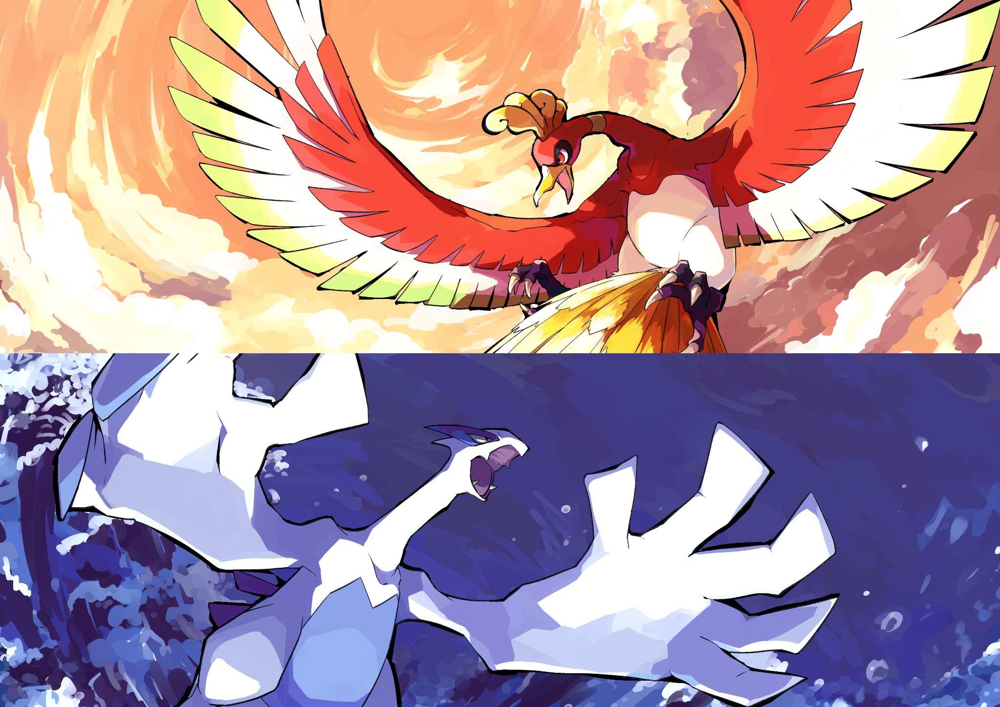
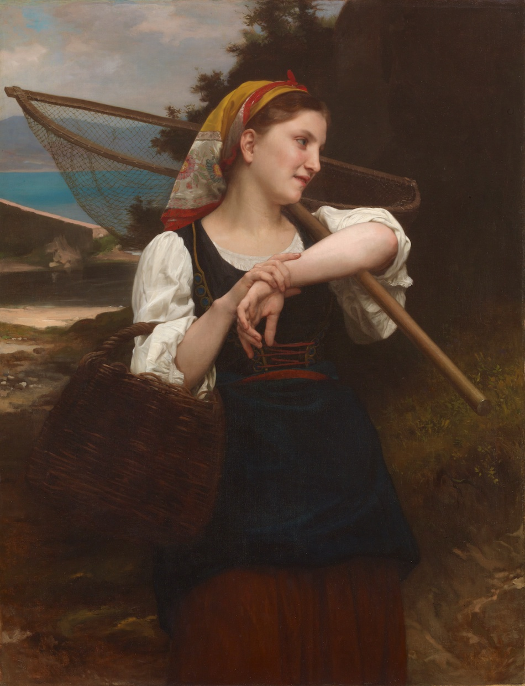

Interview by Tevin
Illustrator Miwano Rag's first-ever solo exhibition Drown in Water and Dream will be held at the pixiv WAEN GALLERY until Wednesday, June 29th, 2022.
The exhibit features around 150 new illustrations from their first artbook Drown in Water and Dream, including some from their personal series Fantasy Water Tales.
Illustrator Miwano has always said that they pay particular attention to their character's posing and the overall composition of their illustrations. Their focus pulls from their experiences as a ballet dancer from the age of two and as an animator.
Miwano RagAfter working as an animator, they have been active as a freelance illustrator since 2020. Their range of work is extensive, with a portfolio including book covers, imagery for virtual performers, and other projects; they're known for their textural and transparent depictions inspired by watercolor and oil painting techniques. Their first art book Drown in Water and Dream (published by KADOKAWA and on sale since March 2022), mainly contains illustrations from Fantasy Water Tales, a collection focusing on a slightly darker worldview. Their favorite things are reptiles, sake, and horror games.
I guess I was kind of interested in it, but I never thought of it as a future career… The college I went to wasn't even related to art. But I happened to come across a job ad for the production company of my favorite show looking for animators while I was a student! I decided to send in some illustrations and ended up getting the job. So I dropped out of school to become an animator.
──How bold of you...!Yeah. (laughs) I was planning on doing the regular job hunt, but accidentally ended up drawing for a living. I think I was pretty lucky.
──But to get a job at an animation studio, you must have already been drawing quite a lot?I've been drawing for as long as I can remember, but the big change came when I was a high school junior doing a month-long homestay in the US. My host mother knew I liked drawing, so she took me to a place in Colorado where the whole town was filled with art. One of the artists there asked me what I liked to draw, so I drew them something and they were so happy that I gave it to them. That really changed the way I thought about drawing, and I felt the need to draw constantly. During that time, I would fill up a 100-page notebook in 2 weeks.
──That's amazing. How long have you been a freelance illustrator?I left my company in 2019, so it's been a little over 2 years. One has to earn money to survive, but it was about time for me to start looking for a new job, and I decided that the only thing I could do was to get really serious about drawing. That's why I decided to focus on uploading my illustrations to social media.
If I didn't upload anything then no one would know me as “Miwano Rag the Illustrator.” So I thought it was important to get as much exposure as possible in the beginning.
The software I use is called CLIP STUDIO PAINT EX. I use Wacom Cintiq Pro 24 for line drawing and Wacom Intuos Pro in size M for coloring. I use the Cintiq Pro 24 in an attempt to correct my posture because I tend to hunch when I'm working. I have been drawing digitally for about 10 years. I remember my mother being very angry with me because I bought a drawing tablet right before I took an entrance exam. (laughs)
──Your style is known to have a sense of translucency to it. What advice would you give to artists who want to put that translucency into their own work?It's all about the paint. I have always loved looking at watercolor and oil paintings, and if you look closely at Western paintings from the Renaissance to the modern period, you can see that even though the skin looks as translucent as porcelain, it is painted very well. That's what gave me the idea to focus on the contrast between light and dark colors, rather than exclusively using light colors.
── The contrast between light and dark?For example, the color with the highest saturation is placed at the border between light and shadow. Next to that, a darker color is placed, and next to that, a color that looks like a mixture of light blue and gray. This arrangement of colors is something I learned from old paintings.
Those interested can see an example from Miwano themselves via their FANBOX.
── I always thought that illustrators who were so focused on lighting must have photography as a hobby, but in your case your roots are in watercolors and oil paintings.One of the paintings that left the biggest impact on me was "Daughter of Fisherman" by William Adolphe Bouguereau. When I was in junior high school, I fell completely in love with this work and had a postcard version of it that I treasured.
